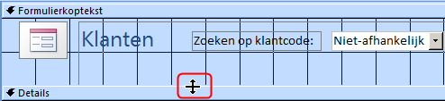
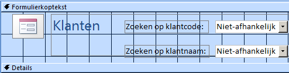
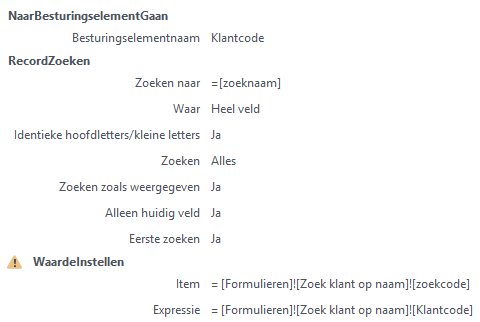

Maak twee keuzelijsten op een formulier met bijbehorende macro's.
Om deze taak uit te kunnen voeren is het noodzakelijk dat je eerst hebt uitgevoerd
Taak: Klant zoeken op code. waar je het formulier
Zoek klant op code hebt gemaakt dat in deze taak gebruikt
wordt.
Er moet een formulier gemaakt worden met daarop de gegevens van een klant en met twee
keuzelijsten. Via de eerste keuzelijst moet een klant op basis van de klantcode
gezocht worden en via de tweede lijst via de naam. Bij dit laatste moet in de
gesorteerde lijst eerst de achternaam getoond worden, met daarachter de voornaam. Na
het maken van een keuze via een van beide lijsten moet de gegevens van de klant in
het formulier getoond worden.
ANALYSE
Als basis van het nieuwe formulier kan het eerder gemaakte formulier Zoek
klant op code genomen worden. In Access kun je een kopie van een
formulier maken en dat onder een andere naam opslaan. Hierop moet dan de tweede
keuzelijst gemaakt worden. Verder dient er een macro gemaakt te worden die de taken
uitvoert. Allereerst naar de keuzelijst gaan en daarna het bijbehorende record
opzoeken.
Open de database snoep2016.accdb.
Geef een rechter muisklik op het formulier Zoek klant op
code en kies dan uit het snelmenu voor
Kopiëren. Geef dan een nieuwe rechter muisklik en
kies dan uit snelmenu voor Plakken.
Noem het nieuwe formulier Zoek klant op naam en open het
formulier in de Ontwerpweergave.
Maak het gedeelte voor de formulierkoptekst wat groter. Positioneer de muis
boven de bovenrand van Details totdat deze wijzigt zoals in de volgende
afbeelding is weergegeven. Druk dan de linker muisknop in en sleep de rand wat
naar beneden zodat er voldoende ruimte is voor de tweede keuzelijst.
Figuur: Vergroten ruimte formulierkoptekst

Maak een tweede Keuzelijst met invoervak onder de eerste
keuzelijst.
Beantwoord de vragen van de Wizard achtereenvolgens als volgt:
De waarden voor de keuzelijst met invoervak moeten worden opgezocht in
een tabel of query.
Tabel: Klanten levert de waarden voor de keuzelijst met invoervak.
Voeg aan de keuzelijst met invoervak achtereenvolgens de volgende velden
toe: Achternaam, Voornaam, Klantcode
Records oplopend sorteren eerst op achternaam en dan op voornaam.
De voorgestelde breedte van de kolom in de keuzelijst accepteren en
aanvinken dat de sleutelkolom (dat is de Klantcode) verborgen moet
worden.
De waarde bewaren voor later gebruik.
Tekst voor het label bij de keuzelijst: Zoeken op
klantnaam:
Na het Voltooien van de Wizard ben je weer teug in de Ontwerpweergave.
Zorg ervoor dat labels en keuzelijsten netjes onder elkaar zijn
uitgelijnd.
Figuur: Formulier met twee keuzelijsten

Selecteer de tweede Keuzelijst met invoervak en wijzig in
Eigenschappenvenster (tab Overige) de naam van het
besturingselement in zoeknaam. Klik op de keuzepijl in
het vak Na bijwerken en typ Klant zoeken op
naam.
Opmerking: Deze macro bestaat nog niet en wordt in de volgende stap
gemaakt.
Sluit het formulier en bewaar de wijzigingen.
Kies tab Maken > Macro (groep Macro's en code).
Figuur: Macro venster
Klik op de keuzepijl in het vak Nieuwe actie toevoegen
en selecteer uit de lijst de actie NaarBesturingselementGaan en
voer als Argument in Klantcode.
Typ Klantcode in het vak
Besturingselementnaam.
Figuur: Actie NaarBesturingselementGaan
Klik op de keuzepijl in het vak Nieuwe actie toevoegen
en selecteer actie RecordZoeken.
Typ de waarde =[zoeknaam] in het vak Zoeken
naar. De andere argumenten zijn al automatisch door Access van
een standaardwaarde voorzien en kunnen blijven staan.
Om er voor te zorgen dat de waarde van de eerste keuzelijst mee verandert
bij het kiezen van een naam, moet hiervoor nog een actie ingesteld worden. De waarde
voor zoekcode moet gelijk worden aan de klantcode van het gevonden
record.
Voeg een actie toe met de naam WaardeInstellen. Deze actie
beschouwt Access als een gevaarlijke actie welke standaard niet getoond wordt.
Deze moet eerst in de lijst zichtbaar gemaakt worden door de instelling Alle acties weergeven (groep Weergeven/verbergen). Deze Actie heeft twee parameters, Item en
Expressie, welke de volgende waarden dienen te
krijgen.
Item: [Formulieren]![Zoek klant op
naam]![zoekcode]
Expressie: [Formulieren]![Zoek klant op
naam]![Klantcode]
Figuur: Macro customer by name

Sluit het macrovenster en bewaar de macro onder de naam Klant zoeken
op naam.
Open formulier Zoek klant op naam en test de werking van
beide keuzelijsten.
Waarschuwing: Wanneer de eerste keuzelijst gebruikt wordt, verschijnt
niet de bijbehorende naam in de tweede keuzelijst. Om dit voor elkaar te
krijgen moet aan de bijbehorende macro ook een actie
WaardeInstellen worden toegevoegd. Maar dat heeft
consequenties voor de werking van de keuzelijst op formulier Zoek
klant op code